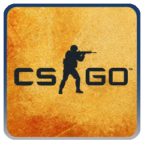

My Digital News
Counter-Strike: Global Offensive
Counter-Strike: Global Offensive (CS:GO) is a multiplayer first-person shooter developed by Valve and Hidden Path Entertainment. It is the fourth game in the Counter-Strike series. Developed for over two years, Global Offensive was released for Windows, macOS, Xbox 360, and PlayStation 3 in August 2012, and for Linux in 2014. Valve still regularly updates the game, both with smaller balancing patches and larger content additions. The game pits two teams, Terrorists and Counter-Terrorists, against each other in different objective-based game modes. The most common game modes involve the Terrorists planting a bomb while Counter-Terrorists attempt to stop them, or Counter-Terrorists attempting to rescue hostages that the Terrorists have captured. There are eight official game modes, all of which have distinct characteristics specific to that mode. The game also has matchmaking support that allows players to play on dedicated Valve servers, in addition to community-hosted servers with custom maps and game modes. A battle-royale game-mode, "Danger Zone", was introduced in December 2018. Global Offensive received positive reviews from critics on release, who praised the game for its gameplay and faithfulness to the Counter-Strike series, though it was criticized for some early features and the differences between the console and PC versions. Since its release, it has drawn in an estimated 11 million players per month, and remains one of the most played games on Valve's Steam platform. In December 2018, Valve transitioned the game to a free-to-play model, focusing on revenue from cosmetic items. The game has an active esports scene, continuing the history of international competitive play from previous games in the series. Teams compete in professional leagues and tournaments, and Global Offensive is now one of the largest global esports.
By wiki | Jul 15 2021 - 12:00 AM
Digital News
An array is a collection of items stored at contiguous memory locations. The idea is to store multip...
Search
Last Articles
Array
Heap
Counter-Strike: Global Offensive
Linked List
Binary Tree